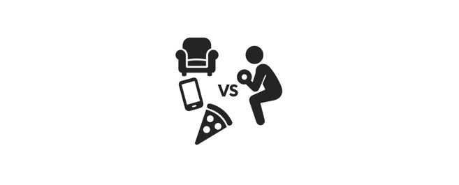

日本では約70％の人が、運動を習慣化できていません。だからこそE.Sは「続けること」に力を入れています。
※日本の厚生労働省が実施した全国調査「週2回以上・1日30分以上の運動習慣がある」人の割合男性約31.8％、女性約25.5％
運動を続けていくと、それが日常生活の一部になっていきます。その瞬間、運動が特別なイベントから「当たり前のこと」に変わります。
健康な身体や理想の体型は、一時的な努力だけでは定着しません。続けることで形成された習慣から「本当の成果」が得られます。